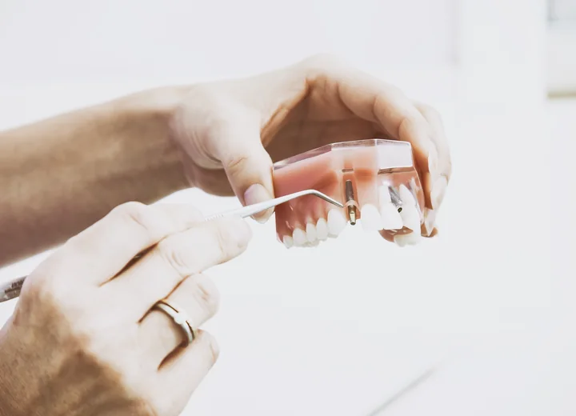
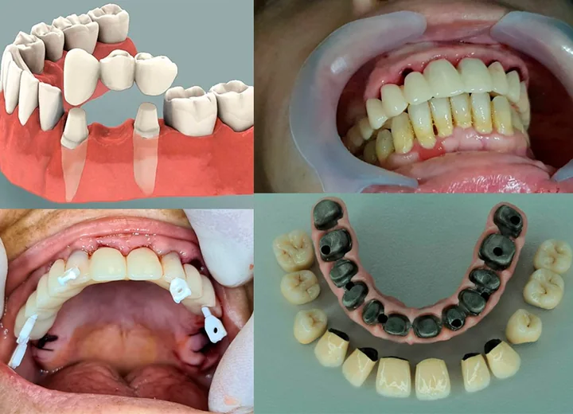
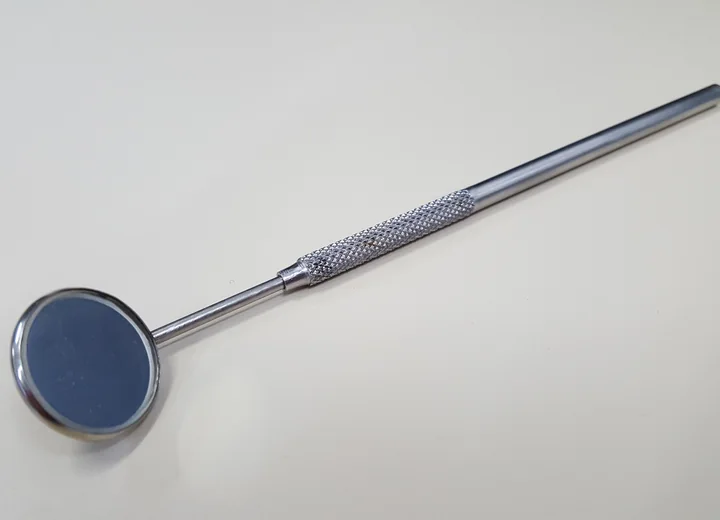
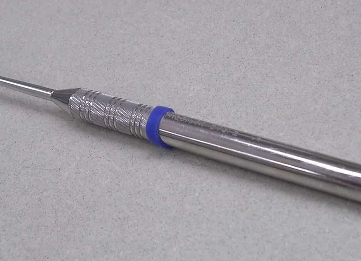
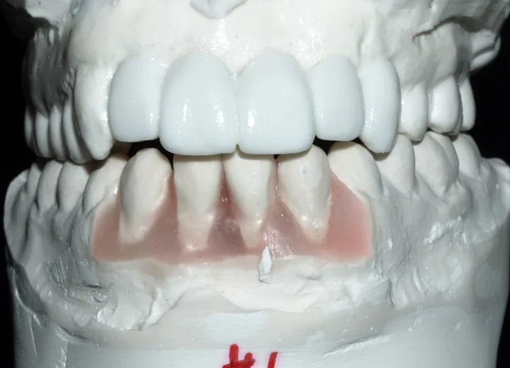

01
Implantes dentários
Uma possibilidade para repor dentes perdidos e recuperar segurança ao mastigar e sorrir.
Conversar sobre implantesDentista em Limeira · SP
Atendimento odontológico individualizado para recuperar saúde, função e confiança — respeitando o seu momento e as necessidades do seu sorriso.
Sobre a profissional
A Dra. Denise Knupp é cirurgiã-dentista em Limeira e conduz cada atendimento com atenção às necessidades, dúvidas e objetivos de cada paciente.
O primeiro passo é compreender o seu caso. A partir da avaliação clínica e, quando necessário, de exames, as possibilidades de tratamento são apresentadas com transparência para que cada decisão seja feita de forma consciente.
Elevo sua autoestima através do seu sorriso.
— Dra. Denise KnuppTratamentos
As indicações dependem de avaliação clínica e planejamento individual. Conheça algumas possibilidades de atendimento.

Uma possibilidade para repor dentes perdidos e recuperar segurança ao mastigar e sorrir.
Conversar sobre implantes
Soluções planejadas para devolver função, conforto e harmonia ao sorriso de acordo com cada caso.
Conversar sobre próteses
Tratamento estético indicado após avaliação para buscar um sorriso mais claro com acompanhamento profissional.
Conversar sobre clareamento
Cuidados direcionados à harmonia do sorriso, sempre respeitando características e objetivos individuais.
Conversar sobre estética
Avaliação, prevenção e cuidados essenciais para acompanhar a saúde bucal ao longo do tempo.
Agendar uma avaliaçãoSua experiência
Sem promessas prontas: cada plano nasce da avaliação e das particularidades do paciente.
Dar o primeiro passoConte pelo WhatsApp qual é a sua principal necessidade e consulte a disponibilidade de horários.
Uma conversa atenta e o exame clínico ajudam a compreender o momento atual do seu sorriso.
As possibilidades, etapas e cuidados são explicados antes do início do tratamento.
Retornos e orientações ajudam a cuidar dos resultados e da saúde bucal ao longo do tempo.
Dúvidas frequentes
Estas respostas são orientações gerais e não substituem uma avaliação odontológica presencial.
O agendamento é feito pelo WhatsApp. Informe seu nome e, de forma breve, o que você procura para consultar os horários disponíveis.
Agendar pelo WhatsAppA indicação depende da avaliação clínica, da condição bucal e de exames de imagem. Somente o planejamento individual permite entender se o implante é adequado ao seu caso.
Conversar sobre implantesPrimeiro é preciso avaliar a saúde bucal e entender a origem da coloração dos dentes. A técnica e o acompanhamento são definidos de acordo com cada caso.
Conversar sobre clareamentoO consultório fica na Rua Sergipe, 15, Sala 2, Vila Cristóvam, em Limeira, SP. O botão “Como chegar” abre a rota no Google Maps.
Abrir no Google MapsEntre em contato para receber orientação sobre disponibilidade de atendimento. Em situações intensas ou com sinais de urgência, procure imediatamente um serviço odontológico ou de saúde adequado.
Consultar disponibilidadeLocalização
Atendimento mediante agendamento.
Seu próximo passo
Fale diretamente com o consultório para consultar horários e agendar sua avaliação.